小林图解网络笔记
TCP/IP 网络模型有哪几层
由于设备的类型是多种多样的，因此在不同的设备间进行通信需要协商出一套通用的网络协议。
该网络协议是分层的，对于 TCP/IP 协议而言，从上到下分为：应用层、传输层、网络层、网络接口层。
这些分层都是理论模型，并不涉及具体的硬件实现
应用层
应用层为最上层，我们所使用的软件都是在应用层实现的。
当两台设备需要传输数据时，应用层只需要把数据传输给下一层，也就是传输层。并且应用层不会去关心数据时如何传输的。
应用层工作在操作系统的用户态，传输层及以下的则工作在核心态
传输层
应用层的数据包会传输给传输层，传输层为应用提供网络支持。
传输层有两个传输协议：TCP 和 UDP。
大多数应用使用的传输协议是 TCP。TCP 比 UDP 多了很多特性，这些特性能够保证数据能够可靠地传输给对方。
UDP 则没有那么多屁事。它只负责发送数据，不保证数据包能否抵达对方，但它的实时性也相对更好，传输效率也高。
TCP 会在原本数据的基础上加上 TCP 头部组成 TCP 报文，然后再将 TCP 报文传输给网络层
应用需要传输的数据可能非常大，如果直接传输会出现很多问题。因此当数据包大小超过 MSS（TCP 最大报文长度）时，就要对其分块。这样如果有某一个分块损坏只需要重传这个分块即可。在TCP 协议中，每个分块称为一个 TCP 段。
上面都是应用作为发送方的情况。当设备作为接受方时，传输层需要将数据传输给应用。但一台设备上可能会有很多应用在接受数据，这时就需要一个编号来将应用区分开，这个编号就是端口。
比如 80 端口通常是给服务器使用的，22 端口是远程登录服务器使用的。由于浏览器（客户端）当中的每一个标签页都是一个独立的进程，操作系统会为这些进程分配临时的端口号。
传输层当中的报文都会携带端口号，因此接收方可以辨别出这个报文是发给谁的。
网络层
传输层的任务是服务于应用，负责应用与应用之间的传输，而实际的传输则要靠网络层。
网络层所使用的是 IP 协议。IP 协议会将传输层的报文作为数据部分，在前面加上 IP 头部组成 IP 报文。
如果 IP 报文的大小超过 MTU 就会再次进行分片，最终得到一个准备发送到网络当中的 IP 报文

网络层负责将数据从一个设备传输到另一个设备。那么这里就必须要有一个编号来对设备进行区分，这个编号就是我们通常说的 IP 地址。
端口号是对接受数据的应用进行区分，IP 地址是对设备进行区分，显然后者的范围更大
我们会用 IP 地址给设备编号。对于 IPv4 协议，IP 地址有 32 位，它们被分成四段（如：192.168.100.1），每段 8 位，每段的最大数是 255。
但是如果只有一个 IP 地址来对设备进行区分，那么寻址起来会非常麻烦。因为全世界会有非常多的设备，我们不能一个一个去匹配。
因此，我们将 IP 地址划分为了两种意义
- 一个是网络号，用来表示该 IP 地址属于哪个 「子网」
- 一个是主机号，用来表示同一「子网」下的不同主机
这里面具体的划分就需要引入子网掩码的概念了。
举个例子，假设 IP 地址为 10.100.122.0/24 ，这后面的 /24 表示 255.255.255.0（相当于 32 位当中有 24 个 1，为了简化就写成了 /24 ）。
那么我们要具体如何计算呢：很简单，只需要将 IP 地址与子网掩码进行按位与的操作就可以得到网络号
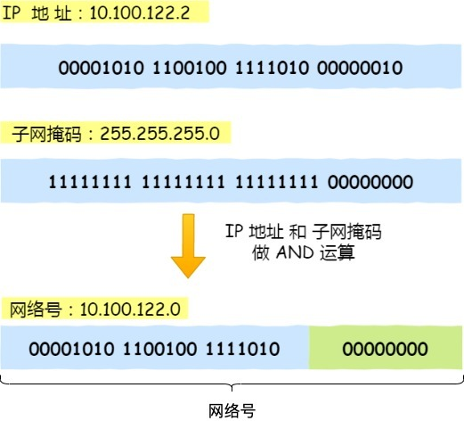
按位与是「两个都是 1 结果才是1，只要有一个是 0 那么结果就是 0 」
最终的网络号是 32 位的。
将 取反后的IP 地址与子网掩码进行按位与运算，就可以得到主机号。
在寻址过程中，会先匹配网络号（先找子网），才会去找主机号。
IP 协议除了用于寻址外，还有一个重要能力是路由。在实际的场景中，两台设备之间并不是直接通过一根网线连接的，这中间会有很多网关、路由器、交换机等设备。每当网络包到达一个节点（设备）时，都需要通过路由算法来决定接下来往哪里走。
路由器的工作是将这个网络包转发到对应的子网内，它只需要知道网络号就可以了。
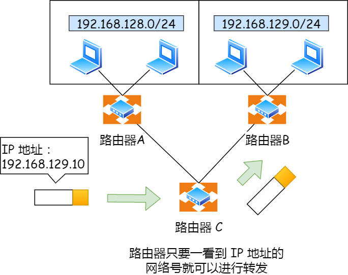
网络接口层
在生成了 IP 头部之后，接下来要交给网络接口层，它会在 IP 头部的前面加上 MAC 头部，在结尾加上校验码，将这个整体封装成数据帧发送到以太网上。
以太网在判断网络包的目的地的方式不同于 IP ，因此需要相应的方式才能在以太网中将数据包传输到正确的地方，而 MAC 头部就是干这个的。因此，在以太网中寻址主要靠 MAC 地址。
MAC 头部当中包含了发送方和接收方的 MAC 地址，我们可以通过 ARP 协议来获取对方的 MAC 地址。
网络接口层主要是为网络层提供「物理上」的传输服务，负责在以太网、WIFI 等底层网络上发送数据包，通过 MAC 地址来标识设备。
总结
具体的封装如下图：
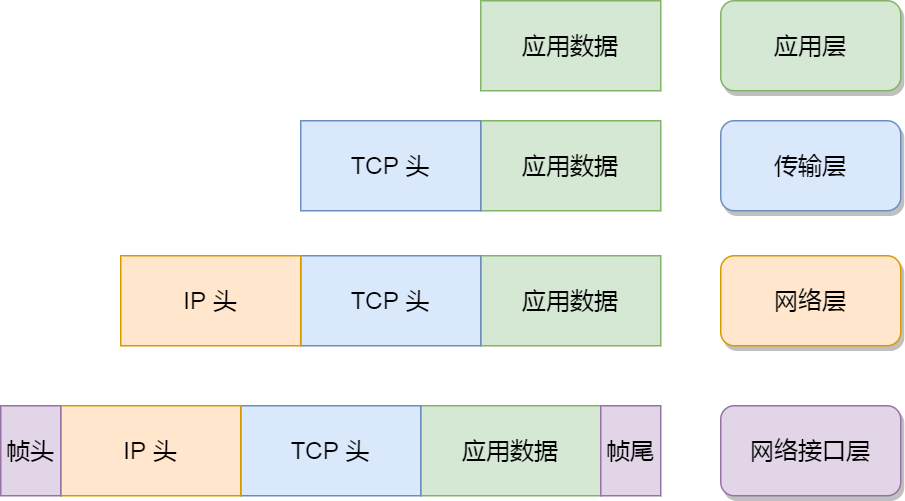
HTTP 的传输单位是消息或报文（ message ）、TCP 层的传输单位是段（ segment ）、IP 层的传输单位是包（ packet ），网络接口层的传输单位是帧（ frame ）
键入网址到网页显示，期间发生了什么
总体流程如下：
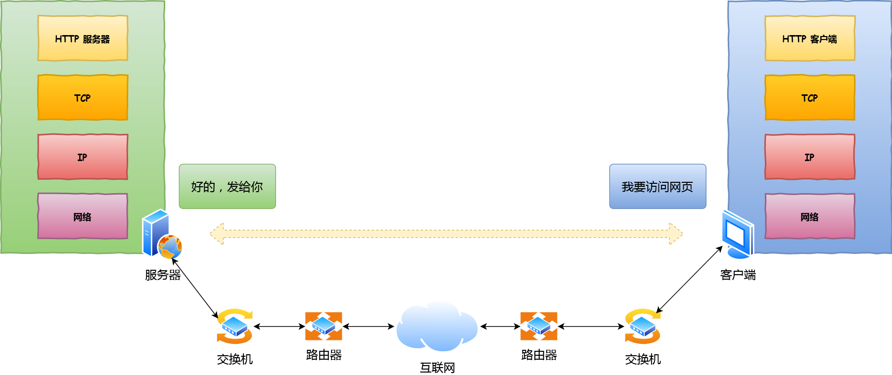
HTTP
- 浏览器做的第一步是解析 URL（网址）
浏览器会先对 URL 进行解析，从而生成发送给 web 服务器的请求信息。
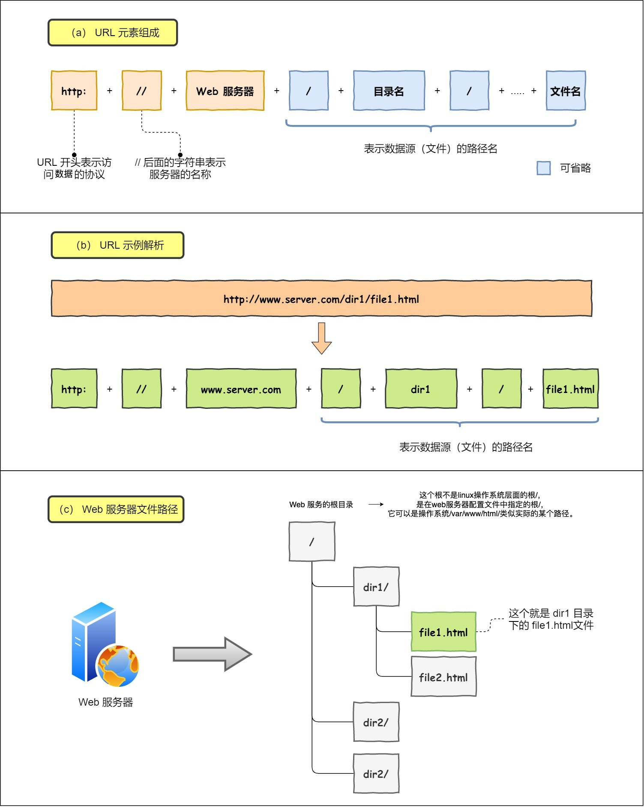
URL 的前面一部分是服务器名称，后面一部分是服务器某一目录下的文件资源，即浏览器请求的文件资源。
如果没有路径名，那么会默认访问事先设置的默认文件，也就是
/index.hrml 或者 /default.html
，这样就不会发生混乱。
- 生成 HTTP 请求消息
对 URL 进行解析之后，浏览器就知道了 Web 服务器和文件名 ，接下来就是根据这俩生成 HTTP 请求消息了。
HTTP 阶段的数据包称为消息或报文。既然有请求报文自然也有响应报文，如下：
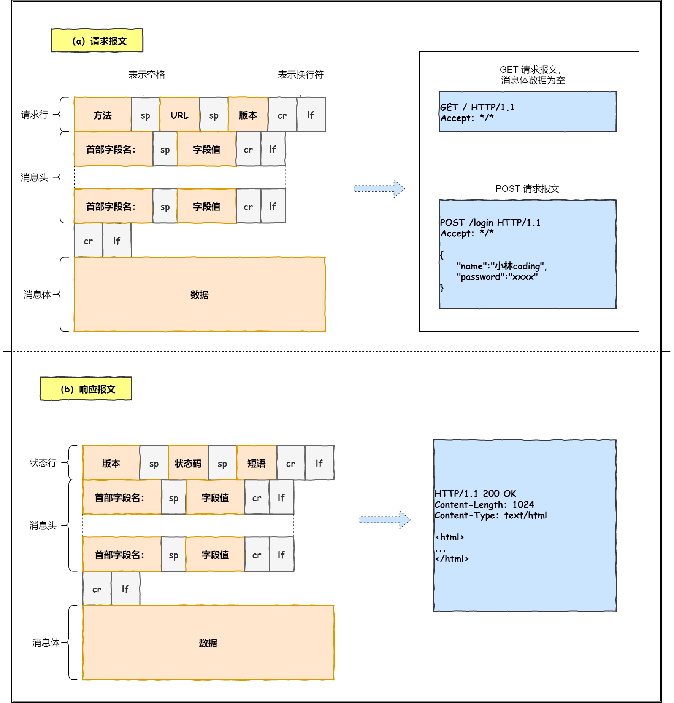
DNS 寻址
浏览器解析完 URL 并生成 HTTP 报文后，需要委托操作系统将报文发送给 Web 服务器。然后你就会发现：我只知道这个服务器的名称，我不知道它的 IP 地址啊。
浏览器不可能将所有服务器的 IP 地址全部保存，最多会有个几分钟的缓存。也就是说我们要去查询服务器的 IP 地址。
为解决这个问题，专门有一种服务器保存了 Web 服务器域名与 IP 之间的对应关系，这就是 DNS 服务器。
- 域名之间的层级关系
服务器的域名都是用句点来进行分割的，比如 www.serve.com
，句点表示不同的层级，越靠右层级越高。
实际上域名的最后还有一个点，即完整域名为 www.serve.com.
，最后那个点代表根域名。
也就是说，. 表示根域，下一层是顶级域 .com
，再下面是 serve.com 。
它们之间的关系为：
根 DNS 服务器
.顶级域 DNS 服务器
.com权威 DNS 服务器
serve.com
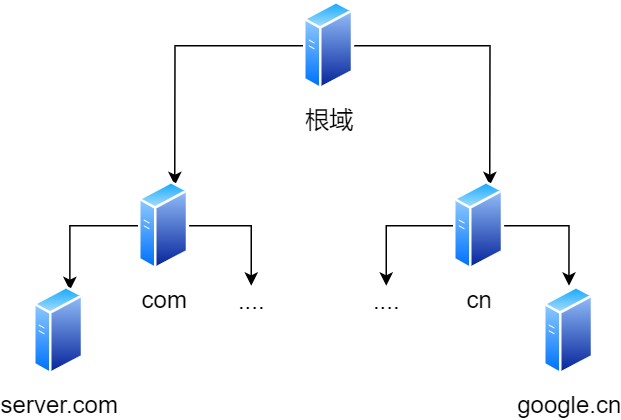
根域的 DNS 服务器信息会保存在互联网中所有的 DNS 服务器中。
因此，只需要找到一台服务器，就可以找到并访问根域服务器。然后再从根域服务器逐步向下寻找，最终就可以找到目标服务器的 IP 地址。
- DNS 请求流程
- 客户端首先会发出一个 DNS 请求给本地的 DNS 服务器（就是客户端的
TCP/IP 设置中填写的 DNS 服务器地址），问
www.serve.com的 IP 地址是啥。 - 本地 DNS 服务器收到客户端的请求后，如果缓存当中能找到该域名对应的 IP ，那么将直接返回。如果没有，那么它会向根域名服务器发出请求
- 根 DNS 服务器收到本地 DNS 服务器的请求后，发现该域名后缀是
.com，于是返回.com的 IP 地址，让本地 DNS 服务器去.com服务器那里查找 - 收到地址后，本地 DNS 服务器向
.com服务器发出请求，.com则向本地服务器返回www.serve.com的服务器 IP 地址 - 接着，
www.serve.com域名下的 DNS 服务器会返回本地 DNS 服务器所请求的域名所对应的 IP 地址 - 最后，本地服务器将该 IP 地址返回给客户端
具体的如下图
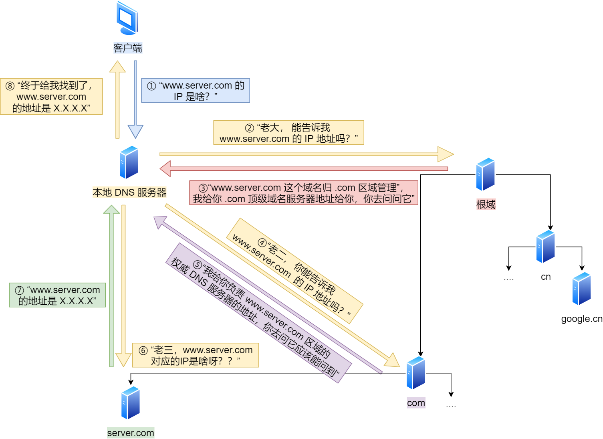
当然，并不是说每一次输入网址都会进行这么多的步骤，是的话还要缓存干什么。
浏览器会先看看自己有没有这个域名对应的 IP 地址的缓存，有的话就直接返回。没有的话会去问操作系统，操作系统会看一看自己的缓存。如果还没有，再去 hosts 文件看，这还没有，才会去问本地 DNS 服务器。
协议栈
应用程序通过 DNS 服务器获取到域名的 IP 地址后，会将 HTTP 的报文传输工作交由操作系统当中的协议栈执行。
协议栈由上下两部分组成，上面会向下面的部分委托工作，下面的部分则会实际进行执行。即上面接受任务，下面执行任务。
当然，应用程序（浏览器）并不能直接委托协议栈进行工作，这有悖于操作系统的规则。因此应用程序需要通过一个工具来委托协议栈来对 HTTP 报文进行传输，这个工具就是 Socket 库。
协议栈的上半部分接收数据的协议有 TCP 和 UDP 两种。协议栈的下面部分是通过 IP 协议来控制网络包的实际收发的。
也就是说， HTTP 报文会先经过 TCP 部分，加上了 TCP 头部之后会委托给 IP 部分，再加上 IP 头部后会执行实际的收发操作。
此外，IP 中还包括 ICMP 协议和 ARP 协议。
- ICMP 协议用于告知网络包传输过程中产生的错误以及各种控制信息
- ARP 协议用于根据 IP 来查询响应的 MAC 地址
TCP
TCP 头部组成
当网络包进过 TCP 模块时，会在其前面加上 TCP 头部，其格式如下：
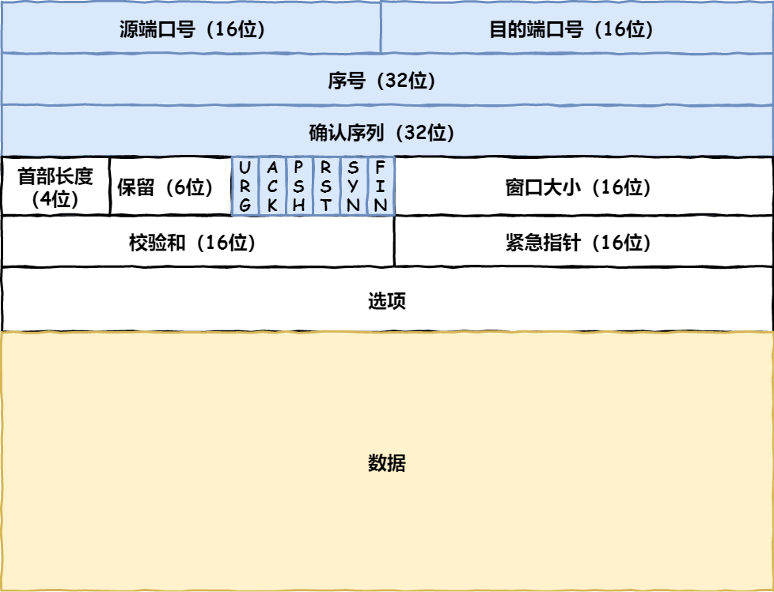
这里的源端口号和目标端口号指的是报文发出的应用以及接收的应用。包的序号是为了解决包乱序的问题。
当然，TCP 会检查对方是否收到，因此会有确认号。如果对方没有收到，则需要重新发送。
TCP 还有一些状态位来检验双方目前所处在的状态。
SYN是发起一个连接ACK是回复RST是重新连接FIN是结束连接
TCP 是面向连接的，包当中的这些状态位的标志说明了连接双方目前所处在的状态。
还有一个是窗口大小。这是因为 TCP 要做流量控制，通信的双方各有一个窗口（缓存），该窗口的大小即为处理数据的能力大小。
除了流量控制以外，TCP 还会做拥塞控制。这里实际上指的是包的发送速度。你发的太快，对面撑死，发的太慢，对面饿死。
三次握手
- TCP 在传输数据之前，会先进行三次握手来建立连接
连接，实际上是一个状态。每当 TCP 头部当中的状态位发生变化时，双方的状态就会发生变化，具体的情况如下：
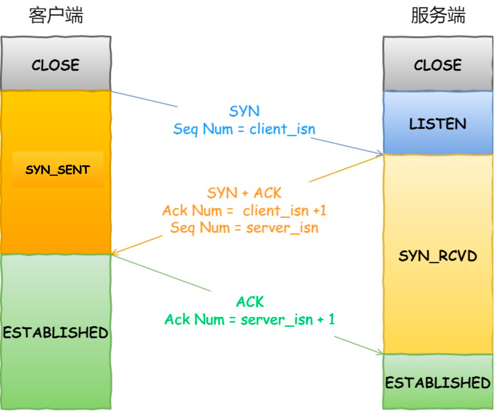
- 一开始，客户端与服务端都处于
CLOSE状态，但是服务端会主动监听某个端口，即服务端会处于LISTEN状态。 - 往后，客户端会发起连接
SYN，即发送一个SYN序列号（这个序列号是由客户端自己算出来的）。此后客户端处于SYN-SENT状态。- 对应蓝色箭头
- 服务端收到后会返回一个
SYN号和ACK号。前者为服务端自己生成的，后者为在客户端发送过来的SYN号的基础上加上 1 之后的值。此后，服务端处于SYN-RECD状态。- 对应橙色箭头
- 客户端收到服务端发来的
SYN号和ACK号之后，会返回一个ACK号（数值上为在服务器发送过来的序列号的基础上加上 1 之后的值），此后客户端处于ESTABLISHED。到此为止，客户端部分的握手结束。- 对应绿色箭头
- 服务端在收到客户端发送过来的
ACK号之后会进入ESTABLISHED。到此为止，服务端部分的握手结束。
整个握手过程，客户端是一发一收，服务端也是一发一收。均为一发一收，因此握手的目的是保证双方均有发送数据和接受数据的能力。
- 注：三次握手阶段双方只会发送 TCP 头部信息，这只是建立连接前的工作，不会发送数据
查看 TCP 状态
在 Linux 下，可以通过 netstat -napt 命令查看。
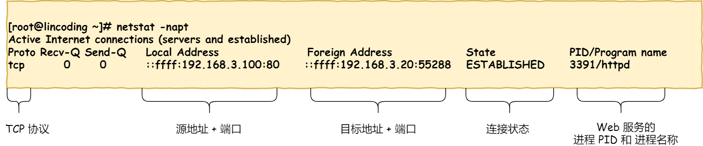
TCP 分割数据
如果 HTTP 请求消息比较长，超过了 Mss 的长度，这个时候
TCP 就会将 HTTP 的数据拆成一块一块来发送，而不是全部发送。
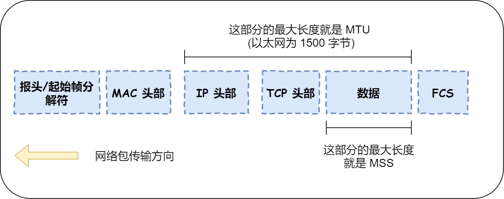
- MSS 除去 IP 头部和 TCP 头部后的数据长度
- MTU 一个网络包的最大长度，以太网中为 1500 字节
HTTP 报文数据会被以 MSS 的数据长度进行拆分，拆分出来的每一块数据都会被放进单独的网络包中。也就是在 MSS 大小的数据前面加上 TCP 头部，之后交由 IP 模块来发送数据。
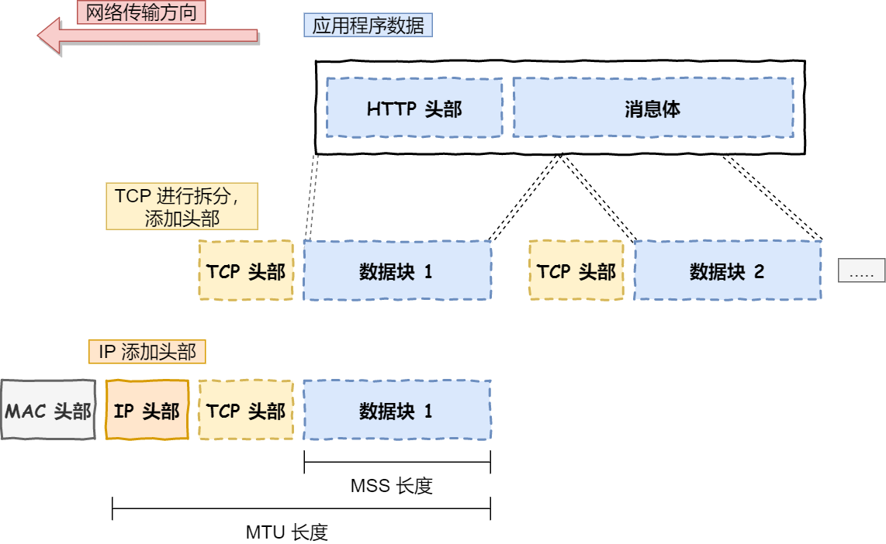
TCP 段（也就是 TCP 报文）的生成
TCP 协议里面会有两个端口，一个是浏览器监听的端口（浏览器接收数据的端口，通常随机生成），另一个是 Web 服务器监听的端口（ HTTP 协议下的端口号是 80， HTTPS 协议下的端口号是 443 ）。
双方建立连接后，TCP 报文当中的数据部分为 「HTTP 报文加上应用数据部分」，再次基础上加上 TCP 头部就可以组成 TCP 段（也就是 TCP 报文）。
至此，网络包的报文如下：
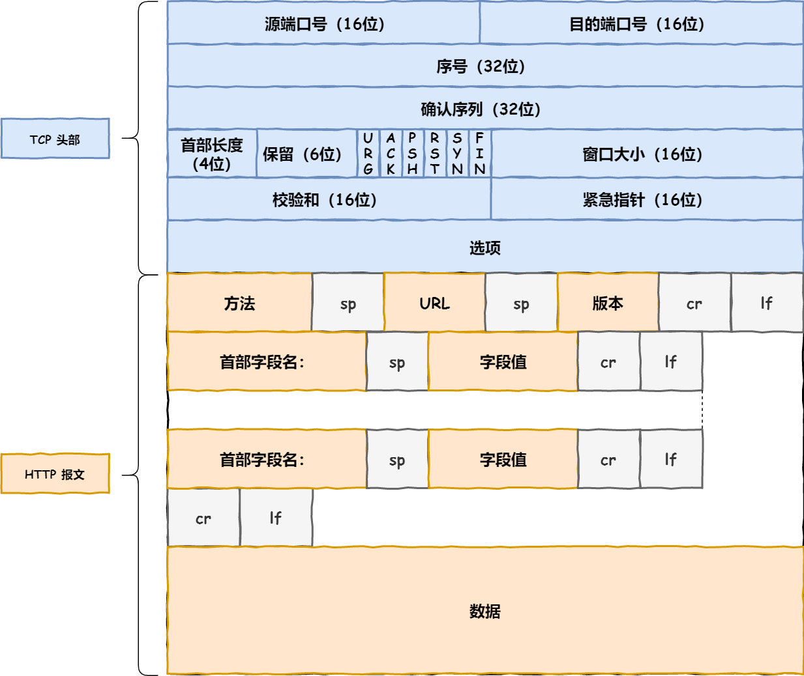
IP
TCP 模块在执行连接、收发、断开等各阶段操作时，都需要委托 IP 模块将数据封装成网络包来发送给通信对象。
IP包（IP 报文）的 IP 头部
IP 头部的格式如下：
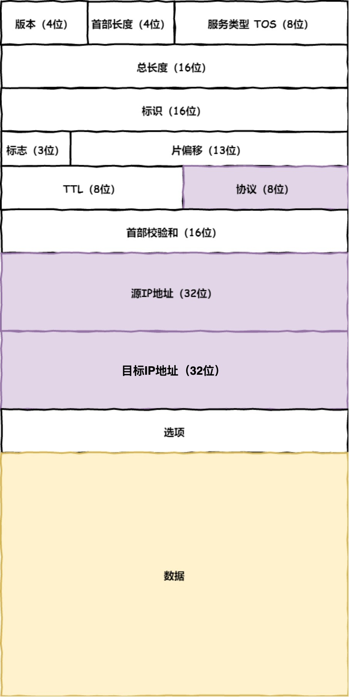
IP 协议里面需要有源地址 IP 和目标地址 IP
- 源地址 IP 为客户端输出的 IP 地址
- 目标地址 IP 为通过 DNS 域名解析得到 Web 服务器 IP 地址
因为 HTTP 报文是经过 TCP 协议传输的，所有在 IP 包头的协议号当中要填 06（十六进制），表示协议为 TCP。
IP 源地址的判断
假设客户端存在多个网卡，就会有多个 IP 地址，那么源地址 IP 应该选择哪个？
这个时候我们可以通过路由表来判断应该使用哪一个网卡来作为源地址 IP
在 Linux 下，可以用 route -n 来查看系统当前的路由表
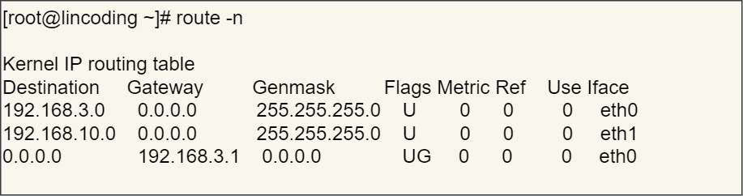
假设 Web 服务器的目标地址为 192.168.10.200
。我们拿这个目标地址进行运算。
- 先将
192.168.10.200与第一条目的子网掩码（Genmask）进行与运算，其结果为192.168.10.0，而第一条目的Destination是192.168.3.0，二者并不匹配。 - 再将
192.168.10.200与第二条目的子网掩码进行与运算，结果为192.168.10.0刚好与第二条目的Destination向吻合。因此将第二条目的网卡eth1的 IP 地址作为源地址 IP。
如果所有条目都无法匹配，则会默认匹配第三个，这个是默认网关，它的目标地址和子网掩码都是
0.0.0.0 。
在这里，我们将 Web 服务器的 IP 地址填入目标 IP 地址，将「对应网卡的 IP 地址」填入源 IP 地址 。
Gateway 就是路由器的 IP
地址。上面匹配成功是将网卡的 IP 地址作为源地址 IP
，不是将路由器的 IP 地址作为源地址 IP 。
其具体匹配过程如下图：
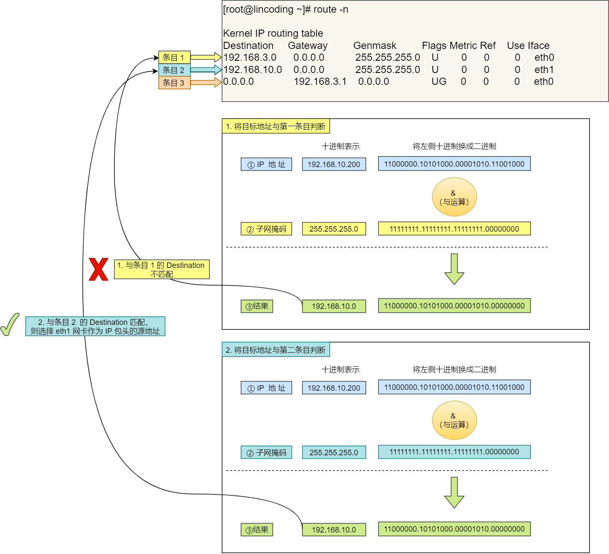
IP 报文的生成
至此，网络包的报文如下：
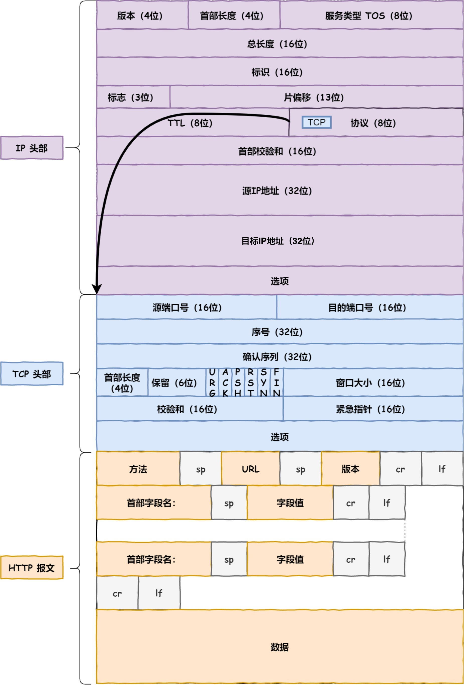
MAC
生成 IP 头部之后，还需要在前面加上 MAC 头部。
MAC 头部格式
MAC 头部为以太网所使用的头部，它包含接收方和发送发的 MAC 地址等信息。
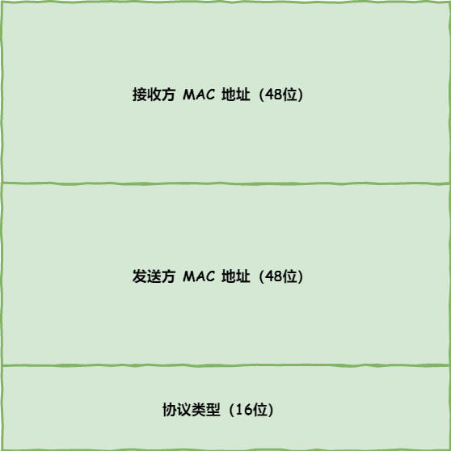
在 MAC 包头里需要发送方 MAC 地址和接收方 MAC 地址，这主要是用于两点之间的传输。
一般在 TCP/IP 通信里， MAC 包头的协议类型只使用：
0800对应 IP 协议0806对应 ARP 协议
MAC 发送方和接收方地址如何确认
发送方的 MAC 地址的获取比较简单，MAC 地址是在网卡生产时写入到 ROM（内存）里的，只需要将这个数值读取出来就行。
接收方的 MAC 地址的获取就相对复杂。我们目前知道目标的 IP 地址，但不知道目标的 MAC 地址，这个时候就需要 ARP 协议来帮我们获取目标路由器的 IP 地址。
ARP 协议会在以太网中以广播的形式向所有以太网当中的设备发出请求，收到请求的设备的 IP 地址如果跟 ARP 所广播的 IP 地址相同，那么该设备将会返回自己的 MAC 地址给数据发送方的设备。
如果对方和自己处于同一个子网当中吗，那么通过上述操作就可以获得对方的 MAC 地址。之后，我们将该 MAC 地址写入接收方的 MAC 地址即可 。
当然，我们并不需要每次都去广播获权，操作系统会将本次的查询结果放在 ARP 缓存当中供以后使用，不过缓存也就几分钟而已。
那么整个发包过程可以概述为：
- 先查询 ARP 缓存，如果有目标的 MAC 地址的话就不需要进行 ARP 广播，直接将该地址写入 MAC 头部即可
- 如果 ARP 缓存当中不存在对方的 MAC 地址时，则通过 ARP 广播查询。
在 Liunx 下，我们可以使用 arp -a 来查询 ARP
缓存的内容
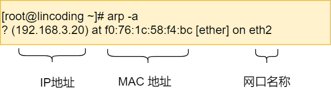
MAC 报文的生成
至此，网络包的报文如下：
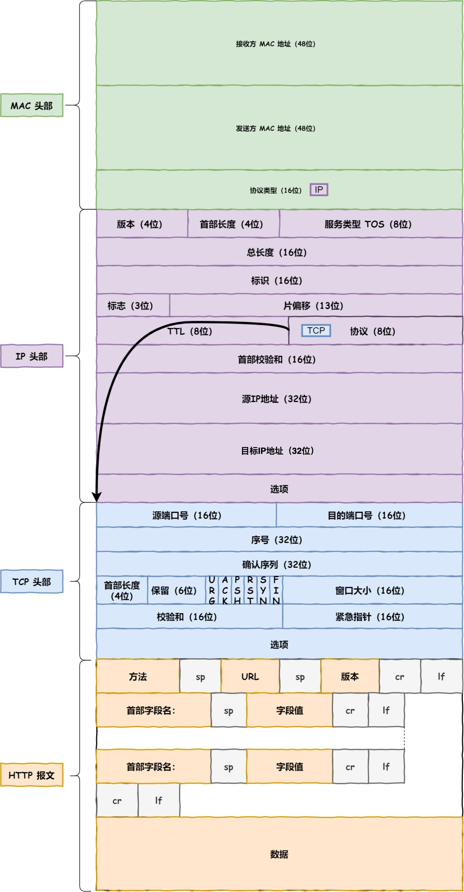
网卡
网络包本质上只是一串二进制数字，这玩意是数字信号，并不能直接传输过去。因此我们需要将数字信号转换成电信号，而转换的工具便是网卡，控制网卡的是网卡驱动程序。
网卡驱动获取到网络包之后，会将其复制到网卡内的缓存区当中，接着会在其开头加上「报头和起始帧分界符」，在末尾加上用于检测错误的「帧校验序列」。
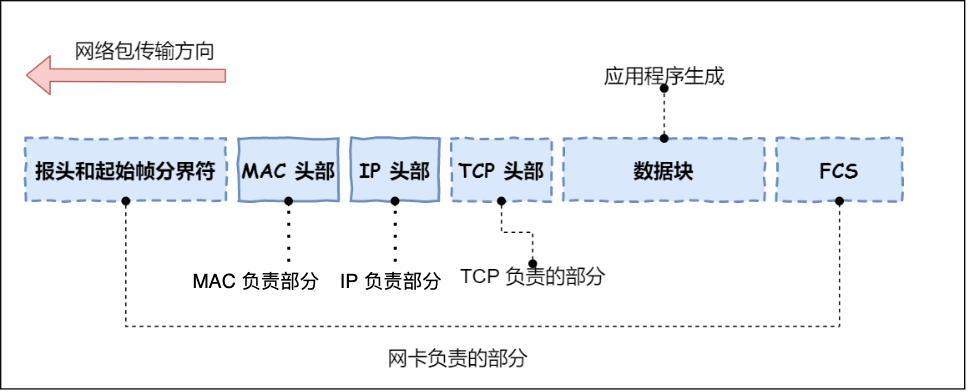
- 起始帧分界符用于表示这个包的起始位置。
- 末尾的 FCS（帧校验序列）则用来检查包在传输过程中是否损坏。
网卡会将包转化成电信号，通过网线发出去。
交换机
交换机的设计是将网络包原样转发到目的地。交换机工作在 MAC 层，并不涉及到 IP ，也称为二层网络设备。
交换机的包接收工作
当电信号到达网线接口时，交换机内部的模块会进行接收，将电信号转化成数字信号。
然后通过包末尾的 FCS 来校验错误，如果没问题则直接放到缓冲区。这一部分的操作与计算机的网卡基本相同，但二者不同的是：
- 计算机的网卡本身具有 MAC 地址，它可以通过检查收到的包的 MAC 地址来判断这个包是不是发给自己的，如果不是则直接丢弃，是的话便接收。
- 交换机的端口并没有 MAC 地址，它不会核对包的接收方的 MAC 地址，而是将所有包全部放到缓冲区。
将包放入缓冲区后，只需要查询 MAC 地址表当中是否有当前 MAC 地址的记录。
交换机的 MAC 地址表主要包含两个信息：
- 设备的 MAC 地址
- 该设备连接在交换机的哪个端口上（该 MAC 地址对应哪个端口）
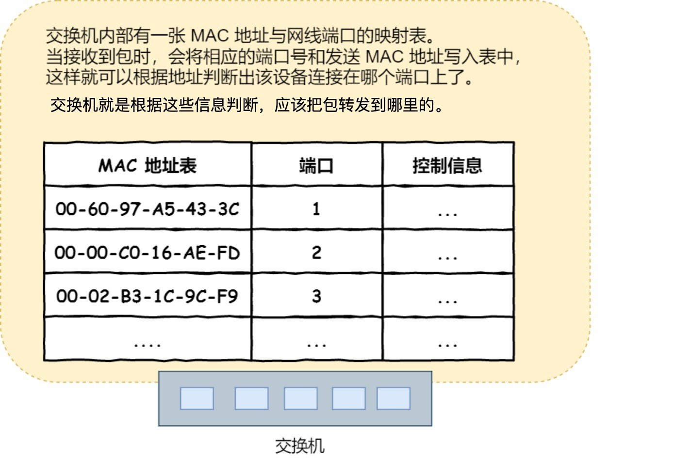
我们举个例子，如果接收方的 MAC 地址为 00-02-B3-1C-9C-F9
，则该 MAC 地址对应端口 3 ，因此交换机直接将数字信号往端口 3
去发送。
因此，交换机会根据 MAC 地址表查找 MAC 地址，然后将信号发送到相应端口。
那么这里就有一个问题是：如果在 MAC 地址表当中找不到指定的 MAC 地址怎么办？
这种情况会对应两种可能：
- 具有该 MAC 地址的设备还没有向交换机发送过包
- 该设备一段时间内没有工作导致其地址被从交换机的 MAC 地址表中删除了
这种情况下，交换机将无法判断出应该将包转发到哪个端口，只能将包转发到除了源端口以外的所有端口上，这样无论该设备在哪个端口上就都可以收到这个包。
这样做并不会有任何的问题，因为以太网设计的原则是：将包发送到整个网络，只有相应的接收者才接收这个包，其他的则直接忽略掉这个包。
此外，如果接收方的 MAC 地址是一个广播地址，那么交换机也会将这个包发送到除源端口以外的所有端口。
以下两个为广播地址：
- MAC 地址：
FF:FF:FF:FF:FF:FF - IP 地址：
255.255.255.255
路由器
路由器与交换机的区别
网络包经过交换机之后就会到达路由器，并在此被转发到下一个路由器或者目标设备。
这里转发的工作原理和交换机类似，也是通过查表来判断转发目标。
但在具体操作上，二者依旧有区别：
- 路由器是基于 IP 设计的，即三层网络设备，路由器的各个端口都具有 MAC 地址和 IP 地址 。
- 交换机是基于以太网设计的，即二层网络设备，交换机的端口并不具有 MAC 地址 。
路由器的基本原理
路由器的端口具有 MAC 地址，因此它能够成为以太网的发送方和接收方，它还具有 IP 地址，在这一点上它跟网卡差不多。
当转发包时，路由器会先从端口接收发给自己的网络包，然后通过路由表来查询转发目标，再通过相应端口将以太网包发送出去。
路由器的包接收操作
当电信号到达网络接口部分时，路由器当中的模块会将电信号转换成数字信号，并通过末尾的 FCS 进行错误校验。
如果没有发生错误，则检查 MAC 头部当中的接收方 MAC 地址，看看是不是发给自己的。如果是则放到缓冲区当中，如果不是则直接丢弃这个包。
查询路由表确定输出端口
完成包的接收操作之后，路由器会去掉这个包的 MAC 头部。
MAC 头部的作用就是将包送达路由器，这里面的接收方的 MAC 地址就是路由器端口的 MAC 地址。因此当包到达路由器之后，MAC 头部的任务也就完成了，于是 MAC 头部就会被丢弃。
往后，路由器会根据后面的 IP 头部对包进行转发。
首先会查询路由表来判断转发目标。
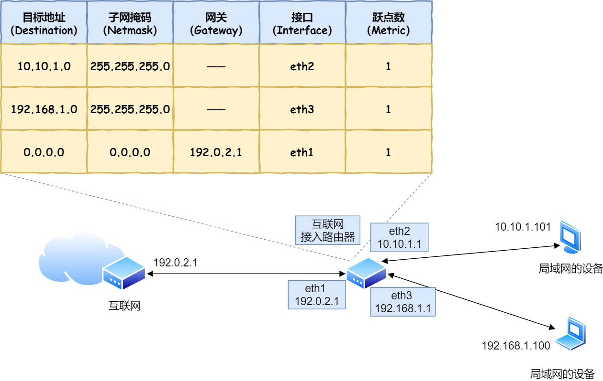
假设地址为 10.10.1.101 的设备要想地址为
192.0.2.100
的服务器发送一个包，这个包会先到达图中的路由器。
然后，我们将服务器的 IP 地址 192.0.2.100
与路由表当中的子网掩码做
与运算，最终得到的结果如果跟路由表前面的
Destination 当中的 IP 相吻合，则会从该端口（eth3
端口）转发出去。
如果实在匹配不到路由，则会选择默认路由。其对应的子网掩码为
0.0.0.0 任何地址与其做与运算的结果都是 0.0.0.0
，这样的话会走 eth1 端口。
路由器的发送操作
接下来会进入包的发送操作。
首先，我们需要根据路由表的网关列来判断对方的地址。
- 如果网关是一个 IP 地址，则该 IP 地址就是我们要转发的目标。说明此时还未抵达终点，需要路由器继续转发
- 如果网关为空，则 IP 头部当中接收方的 IP 地址就是我们的目标地址。说明下一站即是终点。
往后的操作跟交换机差不多。指定目的地的 IP 地址后，需要通过 ARP 协议来确定对方的 MAC 地址。
当然，路由器也有 ARP 缓存。因此路由器会先在缓存当中查找，找不到再去发送 ARP 查询请求。
然后，填上发送方端口的 MAC 地址。还有一个以太类型的字段，填写
0800 （十六进制）用以表示 IP 协议。
至此，MAC 头部已添加完成。往后将有网关将数字信号转换成电信号发送出去。
发送出去的网络包会通过交换机到达下一个路由器或者直接到达服务器。
对于前者而言，由于接收方的 MAC 地址就是下一个路由器，因此交换机会根据这一地址将包转发到路由器。
上述过程进过层层转发后，最终会到达目的地。
在包这一整个转发过程中，源 IP 和目标 IP 是始终不会发生变化的，一直在变的是 MAC 地址。MAC 地址的每一次改变都是路由器通过 ARP 协议来查找目标 IP 所对应的 MAC 地址之后再将该地址写入 MAC 头部的结果。而 MAC 地址就是用于在以太网内进行两个设备之间包的传输。
服务器与客户端
这一部分就是二者相互扒皮的存在了。
当网络包到达服务器之后，服务器就会开始扒网络包的皮。
首先会先查看 MAC 头部，看是否和服务器自己的 MAC 地址相吻合，吻合的话就把包收起来。
然后再看 IP 头部，看 IP 地址是否与自己的相吻合。根据 IP 头当中的协议项，知道自己上层是 TCP 协议。
然后去看 TCP 头部。这里面有序列号，需要看一下这个序列的包是不是我想要的，如果是的话就将其放入缓存并返回一个 ACK ，如果不是则丢弃。TCP 头部里面还有端口号，而服务器的 HTTP 正在监听该端口号。
接着，服务器便知道是 HTTP 进程需要这个包，便将包发送给 HTTP 进程。
之后 HTTP 会返回一个响应报文，这一过程跟刚刚的相同，需要有 TCP 、IP 、 MAC 头部。只不过源地址 IP 是服务器，目标地址 IP 是客户端。
往后的过程跟来的时候一样。当这个包到达客户端后，客户端也会开始扒皮。
最后客户端要离开了，会向服务器发起 TCP 四次挥手，至此双方的连接就断开了。
Linux 系统是如何收发网络包的
我们首先来介绍 OSI 七层参考模型，分别是应用层、表示层、会话层、传输层、网络层、数据链路层和物理层。
每一层的职能如下：
- 应用层，负责给程序提供统一的接口
- 表示层，负责把数据转换成兼容另一个系统能识别的格式
- 会话层，负责建立、管理和终止表示层实体之间的通信会话
- 传输层，负责端到端的数据传输
- 网络层，负责数据的路由、转发、分片
- 数据链路层，负责数据的装帧和差错检测以及 MAC 寻址
- 物理层，负责在物理网络中传输数据帧
由于这玩意只是个理论，我们实际上采用的是四层模型，即 TCP/IP 网络模型， Linux 系统也正是按照这套网络模型来实现网络协议栈的。
TCP/IP 网络模型共有四层，分别是应用层、传输层、网络层和网络接口层，每一层职能如下：
- 应用层，负责向用户提供一组应用程序，如 HTTP 、 DNS 、 FTP 等
- 传输层，负责端到端的通信，比如 TCP 、 UDP 等
- 网络层，负责网络包的封装、分片、路由、转发，比如 IP 、 ICMP 等
- 网络接口层，负责网络包在物理网络中的传输，比如网络包的装帧、 MAC 寻址、差错检测，以及通过网卡传输网络帧等。
TCP/IP 与 OSI 之间的关系如下：
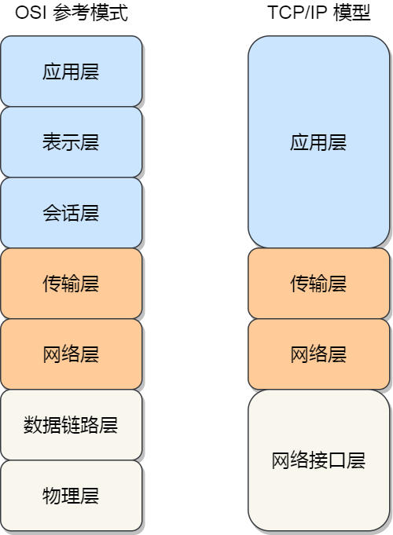
Linux 网络协议栈
TCP/IP 的每一层协议，我们可以理解为「每经过一层，数据体所增加的内容在意义上相同」。我们具体看下面的图：

其中：
- 传输层，给应用程序增加 TCP 头部
- 网络层，在 TCP 段的基础上增加了 IP 头部
- 网络接口层，在 IP 包的基础上分别增加了帧头（这里是包括 MAC 头部在内的）和帧尾
这些新增加的头部和尾部，都是按照特定的协议进行填充的。每一层都增加了协议头，那么网络包的大小自然就增大了。但以太网中并不能传输任意大小的数据包，因此这便有了最大传输单元 MTU ，其大小为 1500 字节。
当网络包超过 MTU 的大小，就会进行分片。当 MTU 越大，所需分片越小，网络吞吐量越大；当 MTU 越小，所需分片越多，网络吞吐量越小。
明白 TCP/IP 网络模型后，我们说 Linux 网络协议栈就类似于 TCP/IP 网络模型。
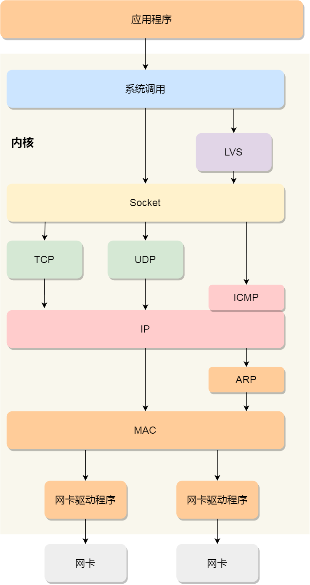
从中我们可以得出：
- 应用程序需要通过系统调用来跟 Socket 层进行数据交互
- Socket 层往下是传输层、网络层、网络接口层
- 最下面一层是网卡驱动程序和网卡设备
Linux 接收网络包的流程
网卡是计算机内部一个专门用于接收、发生网络包的硬件。当网卡收到一个网络包后，会通过 DMA 技术将该网络包放入到 Ring Buffer ，这玩意是一个环形缓冲区。
当网卡接收到网络包之后，需要告诉操作系统这个网络包到达了，网卡告诉操作系统的手段就是触发中断。
但是，这会出现一个问题是：在高性能网络场景下，网络包的数量会非常多，这就会导致网卡多次触发中断。而一旦触发中断，CPU 就会停下手上正做着的事情转而去处理中断，处理完毕之后才回去处理原来的事情。那么如果频繁触发中断，就会导致 CPU 一直在处理这些中断，进而使得其他任务无法正常推进，从而影响了整体的效率。
为了解决频繁中断而带来的系统开销， Linux 内核在 2.6 版本引入了 NAPI
机制。它是用混合了「中断和轮询」的方式来接收网络包。它的核心是不采用中断来读取数据，而是采用中断来唤醒数据接收的服务程序，然后用
poll 来轮询数据。
例如，当有网络包到达网卡时，网卡引发系统中断，于是操作系统会执行网卡硬件中断处理函数，中断处理函数处理完会「暂时屏蔽中断」，然后唤醒「软中断」来轮询处理数据，当没有新数据到达时才恢复中断。这样下来，一次中断实际上是用来唤起数据接收的程序的，并且一次中断可以处理多个网络包。
那么软中断是如何处理网络包的呢？
首先它会从 Ring Buffer 中拷贝数据到内核的 struct sk_buff 缓冲区，从而可以作为一个网络包交给网络协议栈进行逐层处理。
之后，进入到网络接口层。在这里会检查这个包的合法性，不合法则丢弃，合法则接收。去掉其头部和尾部（起始帧分界符、MAC 头部、FSC 校验符），再找出网络包上层协议的类型是 IPv4 还是 IPv6，之后再交给网络层。
到达网络层后，取出 IP 包，这时要判断网络包的下一步走向，是交给上层还是转发出去（这也就是为什么需要 IP 来区别每一个设备了。实际上 IP 地址和 MAC 地址都是用来 区别设备的，区别在于服务器、电脑二者都有，而路由器则只有 MAC 地址）
当确认是发给本机的后，就往 IP 头部里面看上层协议是 TCP 还是 UDP ，接着去掉 IP 头部，转交给传输层。
传输层取出 TCP 头部或 UDP 头部，根据四元组「源 IP 、源端口、目的 IP 、目的端口」来找出对应的 Socket ，并将数据拷贝到 Socket 的接收缓冲区。
最后，应用程序调用 Socket 接口，从内核的 Socket 接收缓冲区中读取数据。
至此，接收工作全部完成，而发送则与之相反，具体如下图：
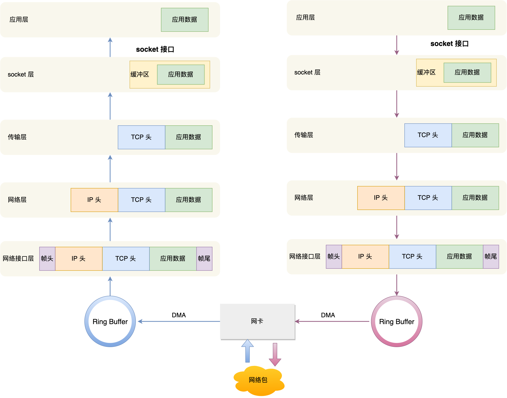
Linux 发送网络包的流程
这里对应上图的右半部分，发包流程与接收流程正好相反。
首先，应用程序会调用 Socket 接口来发送数据包，由于这是一个系统调用，因此操作系统会从用户态陷入到内核态的 Socket 层。此时 Socket 层会将应用层的数据拷贝到 Socket 发送缓冲区。
接下来，会轮到协议栈来工作。协议栈从 Socket 发送缓冲区取出数据包后，按照 TCP/IP 协议从上到下逐层处理。
如果使用的是 TCP 协议，那么会在传输层的时候在包头前面加上 TCP 头部，之后交给网络层。
网络层会给数据加上 IP 头部，并按照 MTU 进行分片。通过查询路由表得知下一站的 IP 地址。
往后交给网络接口层，这里会用目前已知的 IP 地址来通过 ARP 协议广播得到下一站的 MAC 地址。之后增加帧头和帧尾，加入到发包队列（Ring Buffer）当中。
这一切都搞定之后，会触发中断告诉网卡驱动程序有新的网络包需要发送。最后通过 DMA 技术将包放入到硬件网卡的队列当中，随后将其物理上地发送出去。
HTTP 篇
HTTP 基本概念
HTTP 是什么
HTTP 是超文本传输协议。这里涉及三个概念：超文本、传输、协议，我们一个一个看。
- 超文本
- HTTP 传输的内容是超文本。超文本是文字、图片、视频的混合体，最关键的是存在超链接，能够从一个文本跳到另一个文本。
- HTML 是最常见的超文本。它本身是纯文本文件，但内部用很多标签定义了图片、视频等链接。经过浏览器的解释最终得到的就是一个网页
- 传输
- HTTP 是一个双向协议。应用 HTTP 协议时，必定一端是客户端，另一端是服务端。即对于单次 HTTP 传输而言，这两者是一定可用确定的
- HTTP 是在两点之间进行数据的传输的，并不一定是从互联网服务器传输超文本到本地浏览器，也可以是两个服务器之间相互传输超文本数据。但对于单次传输而言，一定有客户端和服务端。
- 协议
- 协议，就是一种规范。它在计算机之间确定了一种交流通信的规范以及相关错误的处理方式
综合起来看就是：HTTP 是一个在两点之间传输超文本数据的约定和规范。
HTTP 常见响应状态码
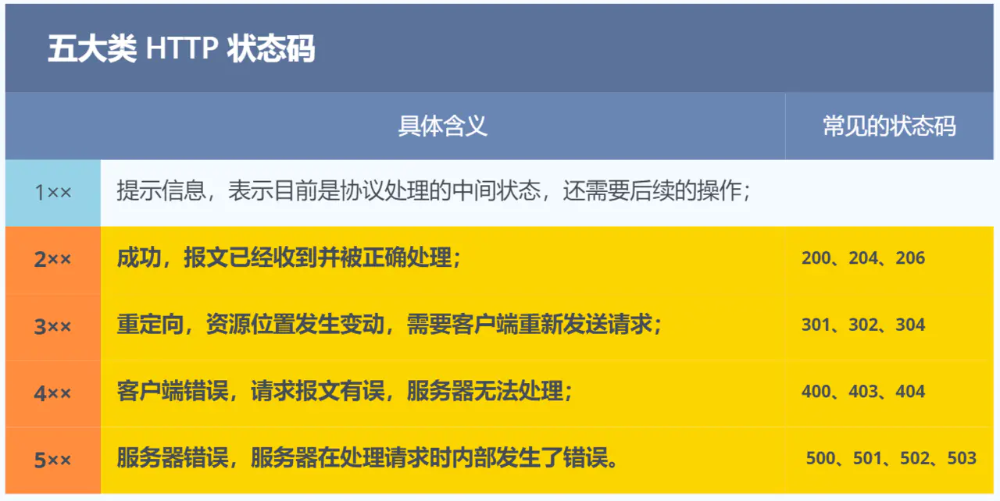
1xx
表示服务端接收到的请求正在处理，实际用到的比较少。
2xx
表示服务端成功处理了客户端的请求。
200 OK是最常见的成功状态码，表示一切正常- 在响应报文内，随状态码返回的信息会因方法的不同而发生改变。使用 GET 方法时，对应请求资源的实体会作为响应消息返回。使用 HEAD 方法时，对应请求资源的实体主体不随响应消息返回，仅返回响应首部。
204 No Content也是常见的成功状态码，与200 OK基本相同，但响应头没有 Body 数据206 Partial Content表示返回的 Body 数据不是资源的全部，而是其中的一部分，同样也是处理成功的状态。
3xx
类状态码表示客户端请求的资源位置发生了变动，需要客户端用新的 URL
重新发送请求，也就是重定向。
301 Moved Permanently表示永久重定向，说明请求的资源已经不存在了，需要用新的 URL 再次访问。302 Found表示临时重定向，说明请求的资源还在，但暂时需要用另一个 URL 进行访问
服务端返回 301 和 302 都会在响应头里使用（服务端使用）字段
Location ，指明后续要跳转的 URL ，浏览器会自动重定向到新的
URL 。
304 Not Modified不具有跳转的含义，表示资源未修改，重定向已存在的缓存文件，也称缓存重定向。告诉客户端可用继续使用缓存资源，用于缓存控制。
4xx
类状态码表示客户端发送的报文有误，服务器无法处理，也就是客户端错误码的含义。
400 Bad Request表示客户端的请求报文有误，但只是个笼统的错误。403 Forbidden表示服务器禁止访问资源，并不是客户端的请求出错。404 Not Found表示请求的资源在服务端上不存在或找不到，因此无法提供给客户端。
5xx
类状态码表示客户端请求报文正确，但服务端处理时内部发生错误，属于服务端错误码。
500 Internal Server Error与 400 类似，只是一个笼统的错误码，无法得知服务器发生了什么错误。501 Not Implemented表示客户端请求的功能还不支持。502 Bad Gateway通常是服务器作为网关或代理时返回的错误码。表示服务器自身工作正常，访问后端服务器发生了错误。503 Service Unavailible表示服务器当前很忙，暂时无法响应客户端。
HTTP 常见字段有哪些
Host 字段
- 客户端发送请求时，用来指定服务器的域名。
Host : www.bilibili.com- 有了
Host字段，就可以请求同一台服务器上的不同网站的资源
Content-Length 字段
- 服务器在返回数据时，会有
Content-Length字段，表明本次回应的数据长度，以字节为单位。 Content-Length : 1000- 本次返回数据的长度为 1000 字节
- 服务器在返回数据时，会有
Connection 字段
Connection字段用于客户端要求服务器使用 TCP 持久连接，以便客户端请求复用。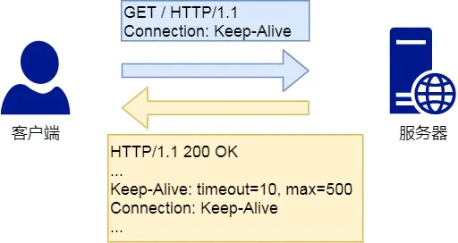
HTTP/1.1 版本的默认连接为持久连接，但为了兼容老版本的 HTTP ，因此需要指定
Connection首部字段的值为Keep-AliveConnection : Keep-Alive这样，一个可用复用的 TCP 连接就建立了，知道客户端或服务端主动关闭连接。
Content-Type 字段
Content-Type字段用于服务端回应客户端本次数据是什么格式。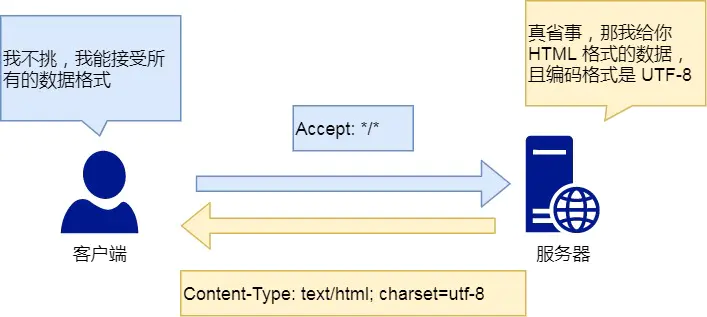
Content-Type : text/html; charset=utf-8这表明，返回 HTML 格式的数据，数据编码为 UTF-8。
当然，客户端也可以用
Accept字段来表示自己接收哪些数据格式。
Content-Encoding 字段
Content-Encoding字段说明了数据的压缩方式。表明服务端返回的数据使用什么格式进行压缩的。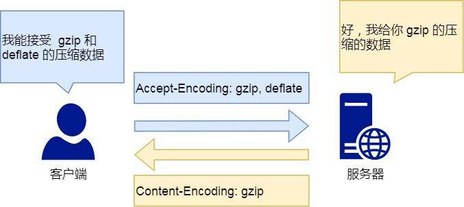
客户端在请求是可用用
Accept-Encoding字段来说明自己接收哪些压缩方式
GET 与 POST
GET 和 POST 有什么区别
GET 是从服务端获取指定的资源。GET 请求的参数部分一般是写资源在服务器当中的目录（也就是除开服务器域名之后剩余的 URL ）。
由于 URL 规定只支持 ASCII ，因此 GET 请求的参数只允许出现 ASCII 字符，并且浏览器回对 URL 的长度进行限制（HTTP 本身对 URL 并没有任何规定）。
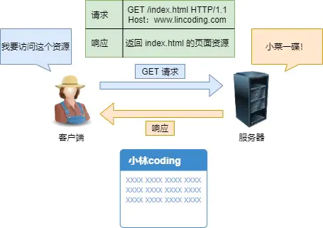
也就是说，Host 字段指明了服务器的域名，GET 字段指明了访问资源在服务器上的位置。
POST 是请求服务端对指定资源做出修改。POST 请求携带数据的位置一般是写在报文 Body 中，Body 中的数据可用是任意格式的数据。
这种请求一般是用于提交表单当中的。这种情况下客户端会向服务端发送一个 POST 请求，将客户填写好的表单放在报文 Body 中，拼接好 POST 头部，通过 TCP 协议发送给服务器。
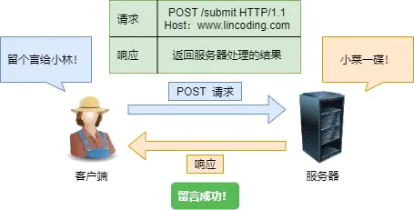
GET 和 POST 方法都是安全和幂等的吗
我们先来说明一下 HTTP 里面的「安全」和「幂等」的概念：
- 「安全」是指客户端请求的方法不会破坏服务端上面的资源
- 「幂等」是指重复执行多次操作，结果是相同的。
按照 RFC 规范来看：
- GET
就是安全且幂等的。因为这是「只读」操作，仅仅是客户端请求服务端的数据，服务端的数据并不会被修改，无论执行多少次结果都一样。
- 基于结果相同这一结论，我们可以对 GET 请求的数据做缓存，这个缓存可以做到浏览器上，也可以做到代理上，除此之外，浏览器可以将 GET 请求保存为书签
- POST 请求会「新增或提交数据」，它会修改服务端上面的资源，因此是不安全的，而且多次操作结果也不相同，因此也不是幂等的。所有，浏览器一般不会缓存 POST 请求，也不能把 POST 请求保存为书签。
当然，这些都是 RFC 规范来的，实际的开发中并不一定会按照这种规范，即：
- 可以用 GET 方法实现增加或删除数据的操作
- 可以用 POST 方法实现查询数据的请求
POST 请求用 Body 传输数据，而 GET 用 URL 传输，这样的数据在浏览器的地址栏就可以轻易看到，但我们并不能说 GET 不如 POST 安全。
由于 HTTP 的传输都是明文，因此只需要对数据抓个包就都可以看到了。对应于信息需要加密的需求，这便诞生了 HTTPS ，不过这个我们下面再说。
HTTP 缓存技术
HTTP 缓存实现方式
对于一些重复性的 HTTP 请求，我们就可以不用每次都去请求服务器这么麻烦，而是直接把这对「请求-相应」数据存放在本地，下次有需要直接从本地读取就行。
因此，避免重复性地发生 HTTP 请求的方法就是缓存技术，在 HTTP 协议的头部有不少是针对缓存设计的字段。 HTTP 实现的缓存分为两种：强制缓存和协商缓存。
强制缓存
强制缓存是只要浏览器判断缓存没有过期，那么浏览器就会直接使用本地缓存，决定是否使用缓存的主动性在浏览器这边。
下面图中，在 200 状态码后面加上了 from disk cache
，就表明使用的是强制缓存（服务器要求浏览器使用强制缓存）
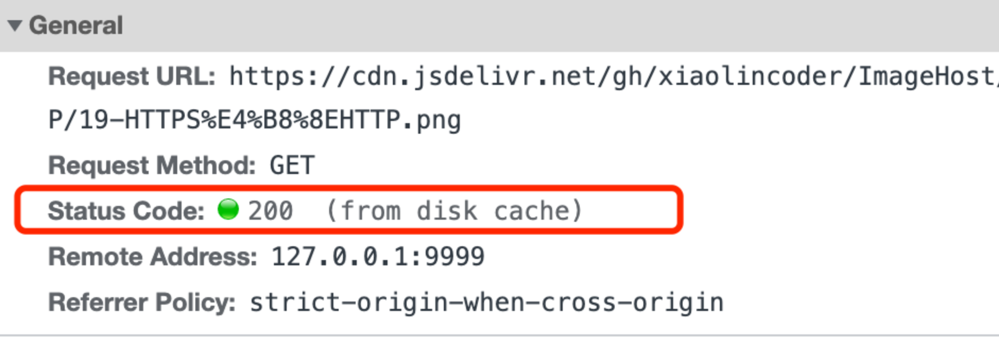
强制缓存利用的是下面这两个响应头部字段来实现的，它们都表示资源在客户端的有效期：
Cache-Control是一个相对时间Expries是一个绝对时间
如果在 HTTP 响应头部中二者都存在的话，那么前者的优先级高于后者。
Cache-Control
的选项更多，设置更精细，因此最好用它来实现强制缓存，具体流程如下：
- 当浏览器第一次访问该数据时，服务器会在响应报文的头部加上
Cache-Control字段，这里设置了该资源有效期的大小。 - 当浏览器再次访问该资源时，会将请求资源的时间于
Cache-Control当中设置的时间相计算，进而判断该资源是否过期。如果没有过去则使用缓存，否则重新向服务器发送请求。 - 当服务器再次收到请求后，会在响应报文中更新
Cache-Control的大小，进而再次重复刚才的步骤。
协商缓存
上面的强制缓存的意思是「只要资源没有过期，就使用本地资源」，协商缓存的意思是「在资源已经过去的前提下，与服务器协商，是否使用原来的缓存」。
也就是说，出现协商缓存就说明该缓存已经是过期的了，那么如何判断是否过期呢？
很简单，只要没有使用强制缓存，那么就说明该资源一定过期了。
协商缓存基于两种不同的 HTTP 头部来实现：
第一种：通过请求头部当中的
If-Modified-Since 字段与响应头部当中的
Last-Modified 字段来实现，它们的意思是：
Last-Modified，用来表示这个资源最后的修改时间If-Modified-Since，这东西比较复杂，是一个过程。- 当浏览器请求资源的时候发现该资源已经过期（浏览器会先检查缓存），浏览器会向服务器发送
HTTP 请求，然后服务器会在响应报文当中加上
Last-Modified声明。 - 客户端收到响应报文后，会再次发起请求并在请求报文当中带上
If-Modified-Since字段，该字段的值是服务器响应报文中Last-Modified的值。 - 服务器收到客户端第二次发送过来的请求后，发现请求报文中带有
If-Modified-Since字段，它会与被请求资源最后的修改时间Last-Modified进行对比。 - 如果最后修改时间较新，则返回最新资源；如果最后修改时间较旧，则返回 304 响应报文告诉客户端继续使用缓存。
- 当浏览器请求资源的时候发现该资源已经过期（浏览器会先检查缓存），浏览器会向服务器发送
HTTP 请求，然后服务器会在响应报文当中加上
第二种：通过请求头部中的 If-None-Match
字段与响应头部中的 ETag 字段，它们的意思分别是：
ETag，用来标识响应资源If-None-Match，这东西也比较复杂，是一个过程- 当浏览器在第一次请求该资源时，服务器会在响应头部加上
ETag唯一标识，这个标识是根据当前请求的资源生成的。 - 当浏览器再次访问该资源时，（在本地缓存已过期的条件下）会在请求头部加上
If-None-Match字段，该字段的值就是ETag的值。 - 服务器第二次收到请求后，会根据
If-None-Match的值与当前请求所生成的Etag值进行比较。 - 如果值相等，则返回 304 ，告诉浏览器继续使用缓存
- 如果不相等，则直接返回新的资源并在响应头部加上新的
ETag标识，再重复上述过程。
- 当浏览器在第一次请求该资源时，服务器会在响应头部加上
整体的过程如下图：
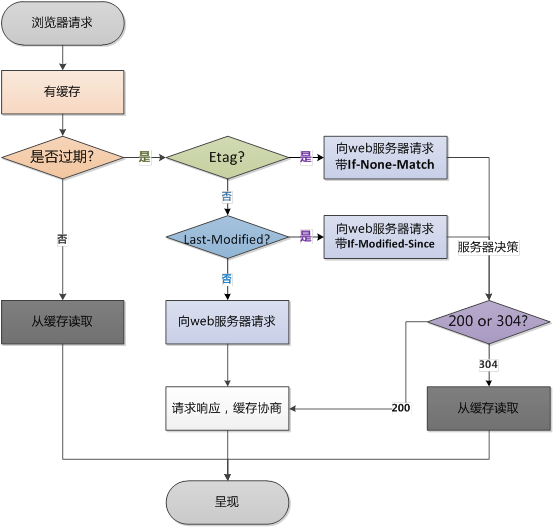